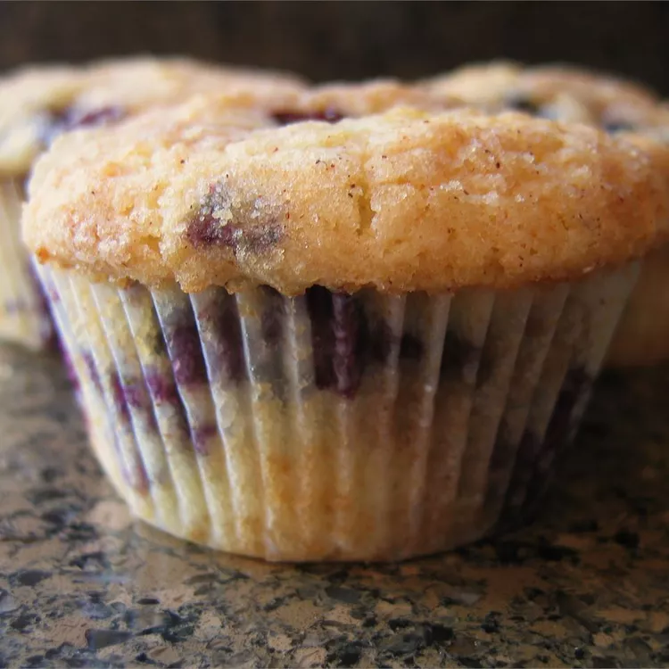

Blueberry Streusel Muffins

Description
This recipe can be made with streusel or plain sugar topping. These muffins don't last long in our house. They are a favorite among my family and friends.
Ingredents
- ½ cup butter, softened
- ¾ cup white sugar
- 2 eggs
- 1 teaspoon vanilla extract
- 2 cups all-purpose flour
- 2 teaspoons baking powder
- ½ teaspoon salt
- ½ cup milk
- 1 ½ cups blueberries
- 2 tablespoons all-purpose flour
- 2 tablespoons brown sugar
- ¼ teaspoon ground cinnamon
- 2 tablespoons butter, chilled